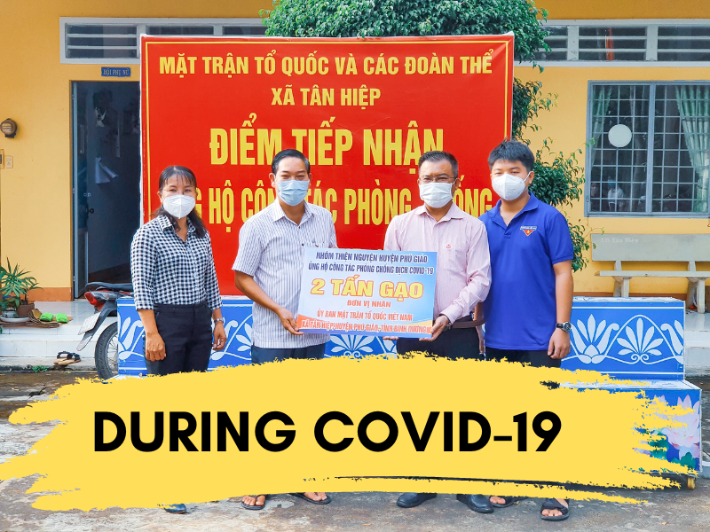
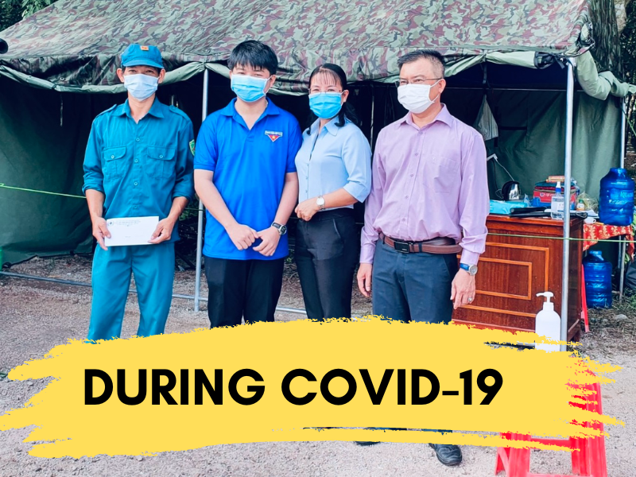

Từ 2014________________ Hiện nay, mạng lưới trường lớp của GDMN vẫn chưa đủ đáp ứng nhu cầu thu nhận trẻ em, đặc biệt là tại các vùng khó khăn như miền núi, biên giới, hải đảo và các khu đô thị đông dân cư. Tỉ lệ trẻ em đến nhà trẻ để học vẫn còn thấp, chỉ 28,2%, trong khi tỷ lệ trẻ em tham gia mẫu giáo đã cao đạt 92,4%. Điều này dẫn đến việc còn 8% trẻ em mẫu giáo và 71,8% trẻ em nhà trẻ chưa được tiếp cận giáo dục đầu đời. Đặc biệt, nhiều trẻ em ở các vùng khó khăn thường tiếp cận chương trình GDMN muộn hơn so với độ tuổi quy định. Trong các vùng khó khăn và đặc biệt khó khăn, tỷ lệ trẻ em nhà trẻ chưa được tiếp cận với GDMN vẫn cao, lên đến 81%, và tỷ lệ trẻ em mẫu giáo là 13,4%. Tỉ lệ trẻ em nhà trẻ tới trường ở những vùng khó khăn mới đạt 19%, thấp hơn so với tỷ lệ trung bình cả nước là 9,2%. Tóm lại, còn rất nhiều công việc cần được thực hiện để cải thiện tình hình giáo dục mầm non tại các vùng khó khăn và đảm bảo rằng mọi trẻ em đều có cơ hội tiếp cận chương trình GDMN. |
Nguồn: Báo Thanh Niên A Lu - Linh vật của dự án |
|---|
|
Khi trí tưởng tượng của trẻ được mở khóa, các khả năng cũng được mở ra, cho phép chúng lựa chọn con đường cho tương lai của chính mình. GK Charity thực hiện hành trình này bằng cách cung cấp cơ sở hạ tầng và sáng kiến để hỗ trợ sự phát triển của tuổi thơ ở Việt Nam thông qua giáo dục mầm non và các chương trình giáo dục khác. |

|
|---|
|  |  |
|---|
Dự án "Xuân Yêu Thương" của GK Charity hỗ trợ tài chính để giúp người dân trở về quê ăn Tết an lành. Mục tiêu là đảm bảo mỗi gia đình có một cái Tết ấm áp và đầy đủ. Dự án không chỉ là sự chăm sóc vật chất mà còn là biểu tượng của lòng nhân ái và đoàn kết trong cộng đồng Việt Nam.
Dự án "Góp Gạch Xây Trường" là nỗ lực của GK Charity nhằm xây dựng trường học mới cho trẻ em ở vùng cao. Với mục tiêu quan trọng là tạo điều kiện học tập tốt hơn, dự án hứa hẹn mang lại không gian giáo dục hiện đại, tận hưởng học đường an toàn và chất lượng cho những em nhỏ ở những khu vực khó khăn.
Dự án "Cắp Sách Tới Trường" của GK Charity nhằm hỗ trợ trẻ em ở vùng cao bằng cách hỗ trợ học phí cũng như sách vở để tạo điều kiện thuận lợi cho học tập. Mục tiêu của dự án là giúp những em nhỏ ở những khu vực khó khăn có cơ hội học tập tốt hơn, đồng thời khuyến khích sự đam mê và sự ham muốn học.
Dự án "Mùa Lũ Quê Tôi" là sự nỗ lực quan trọng của chúng tôi nhằm hỗ trợ các vùng bị ảnh hưởng bởi lũ lụt tại Việt Nam. Chương trình tập trung vào việc cung cấp hỗ trợ tài chính, đồng thời cung cấp vật liệu cần thiết như thực phẩm, nước sạch, quần áo và vật dụng cần thiết khác để giúp người dân và cộng đồng đối mặt với thách thức khó khăn sau mỗi trận lũ.
Dự án "Xây Nhà Tình Thương" tại miền Tây Việt Nam là sự nỗ lực để xây dựng những ngôi nhà ấm cúng cho những người có điều kiện khó khăn. Chúng tôi cam kết cung cấp mái ấm, nơi an cư cho những gia đình khó khăn, nhằm tạo điều kiện sống tốt hơn và lan tỏa tình thương đến những người cần giúp đỡ cũng như mang lại sự ổn định và niềm vui cho họ.
Dự án "Kế Hoạch Nhỏ" ở Việt Nam tập trung vào việc kêu gọi cộng đồng tham gia thu gom và tái chế rác. Chúng tôi cung cấp điểm thu gom, hướng dẫn phân loại rác và tổ chức các chiến dịch tăng cường nhận thức về bảo vệ môi trường. Mục tiêu là giảm lượng rác thải và xây dựng một cộng đồng chủ động trong việc bảo vệ môi trường.
Sản phẩm sắp ra mắt
Mặt trước được thiết kế tối giản với logo của GK Charity trên ngực áo thể hiện việc tình nguyện và sẵn sàng giúp đỡ người khác khi gặp khó khăn luôn nằm trong tim mỗi chúng ta.
Mặt sau với logo được in trên lưng thể hiện GK Charity đã một phần nào đó đóng góp và nâng đỡ những hoàn cảnh khó khăn và từ đó họ đã cải thiện cuộc sống một cách tốt đẹp hơn.
Sản phẩm bán chạy
Ly nước sang trọng, chất liệu thủy tinh chịu nhiệt, giữ nước lạnh lâu. Thiết kế nhẹ, cầm nắm thoải mái, chống trơn trượt. Nắp kín chặt, bảo toàn hương vị. Sự hoàn hảo giữa đẹp mắt và chất lượng xuất sắc.
Là biểu tượng của sự đơn giản và tiện ích. Thiết kế thời trang và chất liệu vải bền chắc, túi tote không chỉ là người bạn đồng hành lý tưởng mọi nơi mà còn là lựa chọn thú vị để thể hiện phong cách cá nhân của bạn.
Chất liệu nhẹ nhàng và thoáng khí giúp bạn duy trì sự thoải mái trong mọi hoạt động. Thiết kế độc đáo và hiện đại, nón không chỉ bảo vệ đầu khỏi ánh nắng mặt trời mà còn là điểm nhấn thời trang hoàn hảo.